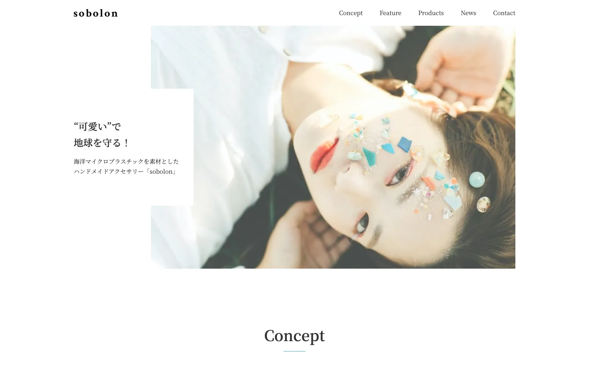

Worksに戻る
Works — Coding
デザインカンプからサイト制作ライブコーディング
オンラインスクールの課題。ライブコーディング形式で、Webサイト制作の実務プロセスを学習しました。

Purpose制作の目的
スクールが提供したデザインカンプをもとに、ライブコーディングを見ながら制作。ユーザーが必要な情報に素早くたどり着ける情報設計と、クリーンなビジュアル表現を意識しました。Webサイト制作の実務的なプロセスを体験的に学ぶことを目的としています。
Codingコーディングについて
保守性と再利用性を重視し、Sassによるモジュール設計とBEM設計手法を採用。特にコンポーネント単位での開発を意識し、変更や拡張が容易な構造を実現しました。JavaScriptではスムーズスクロール・スクロールアニメーション・タブ切り替えなど、ユーザビリティを向上させる機能を実装しています。
レスポンシブデザインで各デバイスに最適な表示と操作性を確保するとともに、Webパフォーマンスの最適化やクロスブラウザ対応にも注力しました。
この作品の制作意図や工夫について、詳しくお話しできます。お気軽にご連絡ください。
お問い合わせ